건설기계설비기사 (2017-05-07 기출문제)
1과목: 재료역학
1. 그림과 같이 한변의 길이가 d인 정사각형 단면의 Z-Z 축에 관한 단면계수는?
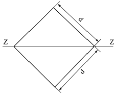
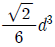
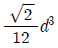
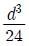
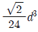
(정답률: 23%)

2. 세로탄성계수가 210 GPa인 재료에 200MPa의 인장응력을 가했을 때 재료 내부에 저장되는 단위 체적당 탄성변형에너지는 약 몇 Nㆍm/m3인가?
- 95.238
- 95238
- 18.538
- 185380
(정답률: 32%)
3. 오일러의 좌굴 응력에 대한 설명으로 틀린 것은?
- 단면의 회전반경의 제곱에 비례한다.
- 길이의 제곱에 반비례한다.
- 세장비의 제곱에 비례한다.
- 탄성계수에 비례한다.
(정답률: 38%)
4. 공칭응력(nominal stress : σn)과 진응력(true stress : σt) 사이의 관계식으로 옳은 것은? (단, εn은 공칭변형율(nominal strain), εt는 진변형율(true strain)이다.)
- σt=σn(1+εt)
- σt=σn(1+εn)
- σt=In(1+σn)
- σt=In(σn+εn)
(정답률: 32%)
5. 다음 막대의 z방향으로 80kN의 인장력이 작용할 때 x 방향의 변형량은 몇 μm인가? (단, 탄성계수 E=200 GPa, 포아송 비 v=0.32, 막대크기 x=100mm, y=50mm, z=1.5m이다.)
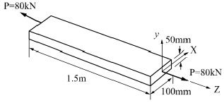
- 2.56
- 25.6
- -2.56
- -25.6
(정답률: 21%)
6. 직경 d, 길이 l인 봉의 양단을 고정하고 단면 m-n의 위치에 비틀림모멘트 T를 작용시킬 때 봉의 A부분에 작용하는 비틀림모멘트는?
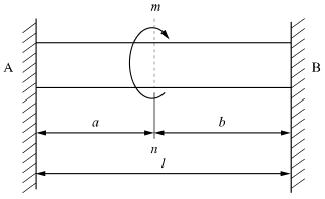
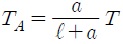
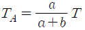
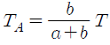
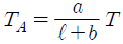
(정답률: 37%)
7. 그림과 같은 일단고정 타단지지보의 중앙에 P=4800N의 하중이 작용하면 지지점의 반력(RB)은 약 몇 kN인가?
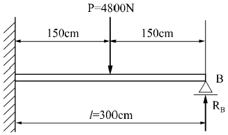
- 3.2
- 2.6
- 1.5
- 1.2
(정답률: 32%)
8. 그림과 같은 부정정보의 전 길이에 균일 분포하중이 작용할 때 전단력이 0이 되고 최대 굽힘모멘트가 작용하는 단면은 B단에서 얼마나 떨어져 있는가?
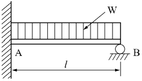
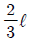
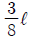
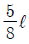
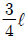
(정답률: 34%)
9. 길이 15m, 봉의 지름 10mm인 강봉에 P=8kN을 작용시킬 때 이 봉의 길이방향 변형량은 약 몇 cm인가? (단, 이 재료의 세로탄성계수는 210 GPa이다.)
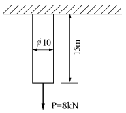
- 0.52
- 0.64
- 0.73
- 0.85
(정답률: 36%)
10. 그림과 같이 강선이 천정에 매달려 100kN의 무게를 지탱하고 있을 때, AC 강선이 받고 있는 힘은 약 몇 kN인가?
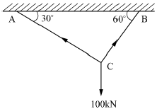
- 30
- 40
- 50
- 60
(정답률: 37%)
11. 그림과 같은 직사각형 단면을 갖는 단순지지보에 3kN/m의 균일 분포하중과 축방향으로 50kN의 인장력이 작용할 때 단면에 발생하는 최대 인장 응력은 약 몇 MPa인가?
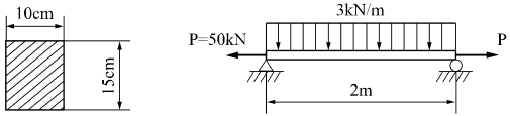
- 0.67
- 3.33
- 4
- 7.33
(정답률: 24%)
12. J를 극단면 2차 모멘트, G를 전단탄성계수, l을 축의 길이, T를 비틀림모멘트라 할 때 비틀림각을 나타내는 식은?
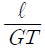
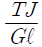
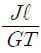
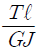
(정답률: 39%)
13. 그림과 같은 단순보(단면 8cm X 6cm)에 작용하는 최대 전단응력은 몇 kPa인가?
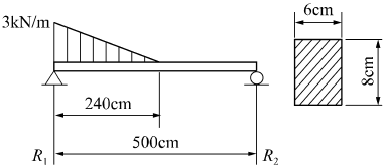
- 315
- 630
- 945
- 1260
(정답률: 25%)
14. 동일한 전단력이 작용할 때 원형 단면 보의 지름을 d에서 3d로 하면 최대 전단응력의 크기는? (단, τmax는 지름이 d일 때의 최대전단응력이다.)
- 9τmax
- 3τmax
- 1/3max
- 1/9max
(정답률: 41%)
15. 정사각형의 단면을 가진 기둥에 P=80kN의 압축하중이 작용할 때 6MPa의 압축응력이 발생하였다면 단면의 한 변의 길이는 몇 cm인가?
- 11.5
- 15.4
- 20.1
- 23.1
(정답률: 43%)
16. 그림과 같이 단순화한 길이 1m의 차축 중심에 집중하중 100kN이 작용하고, 100rpm으로 400kW의 동력을 전달할 때 필요한 차축의 지름은 최소 몇 cm인가? (단, 축의 허용 굽힘 응력은 85MPa로 한다.)
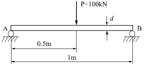
- 4.1
- 8.1
- 12.3
- 16.3
(정답률: 18%)
17. 그림과 같은 직사각형 단면의 보에 P=4kN의 하중이 10° 경사진 방향으로 작용한다. A점에서의 길이 방향의 수직응력을 구하면 약 몇 MPa인가?
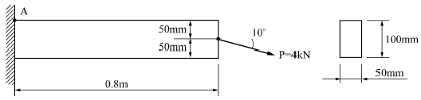
- 3.89
- 5.67
- 0.79
- 7.46
(정답률: 23%)
18. 그림과 같은 단순보에서 전단력이 0이 되는 위치는 A지점에서 몇 m 거리에 있는가?
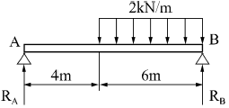
- 4.8
- 5.8
- 6.8
- 7.8
(정답률: 31%)
19. 그림과 같이 전체 길이가 3L인 외팔보에 하중 P가 B점과 C점에 작용할 때 자유단 B에서의 처짐량은? (단, 보의 굽힘강성 EI는 일정하고, 자중은 무시한다.)
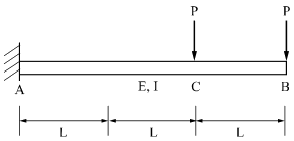
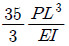
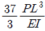
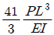
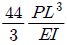
(정답률: 30%)
20. 두께가 1cm, 지름 25cm의 원통형 보일러에 내압이 작용하고 있을 때, 면내 최대 전단응력이 –62.5MPa이었다면 내압 P는 몇 MPa인가?
- 5
- 10
- 15
- 20
(정답률: 13%)
2과목: 기계열역학
21. 그림과 같이 상태 1, 2 사이에 계가 1→A→2→B→1과 같은 사이클을 이루고 있을 때, 열역학 제1법칙에 가장 적합한 표현은? (단, 여기서 Q는 열량, W는 계가 하는 일, U는 내부에너지를 나타낸다.)
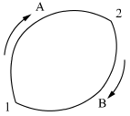
- dU=δQ+δW
- ΔU=Q-W
- ∮δQ=∮δW
- ∮δQ=∮δU
(정답률: 20%)
22. 8°C의 이상기체를 가역단열 압축하여 그 체적을 1/5로 하였을 때 기체의 온도는 약 몇 °C인가? (단, 이 기체의 비열비는 1.4 이다.)
- -125°C
- 294°C
- 222°C
- 262°C
(정답률: 31%)
23. 다음 중 정확하게 표기된 SI 기본단위(7가지)의 개수가 가장 많은 것은? (단, SI 유도단위 및 그 외 단위는 제외한다.)
- A, Cd, ℃, kg, m, Mol, N, S
- cd, J, K, kg, m, Mol, Pa, S
- A, J, ℃, kg, km, mol, S, W
- K, kg, km, mol, N, Pa, S, W
(정답률: 22%)
24. 그림의 랭킨 사이클(온도(T)-엔트로피(s)선도)에서 각각의 지점에서 엔탈피는 표와 같을 때 이 사이클의 효율은 약 몇 % 인가?
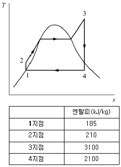
- 33.7%
- 28.4%
- 25.2%
- 22.9%
(정답률: 31%)
25. 오토(Otto) 사이클에 관한 일반적인 설명 중 틀린 것은?
- 불꽃 점화 기관의 공기 표준 사이클이다.
- 연소과정을 정적 가열과정으로 간주한다.
- 압축비가 클수록 효율이 높다.
- 효율은 작업기체의 종류와 무관하다.
(정답률: 30%)
26. 열교환기를 흐름 배열(flow arrangement)에 따라 분류할 때 그림과 같은 형식은?
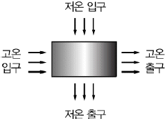
- 평행류
- 대향류
- 병행류
- 직교류
(정답률: 38%)
27. 압력이 106N2, 체적이 1m3인 공기가 압력이 일정한 상태에서 400kJ의 일을 하였다. 변화 후의 체적은 약 몇 m3인가?
- 1.4
- 1.0
- 0.6
- 0.4
(정답률: 28%)
28. 어느 증기터빈에 0.4kg/s로 증기가 공급되어 260kW의 출력을 낸다. 입구의 증기 엔탈피 및 속도는 각각 3000kJ/kg, 720m/s, 출구의 증기 엔탈피 및 속도는 각각 2500kJ/kg, 120m/s이면, 이 터빈의 열손실은 약 몇 kW가 되는가?
- 15.9
- 40.8
- 20.0
- 104
(정답률: 24%)
29. 열역학 제2법칙과 관련된 설명으로 옳지 않은 것은?
- 열효율이 100%인 열기관은 없다.
- 저온 물체에서 고온 물체로 열은 자연적으로 전달되지 않는다.
- 폐쇄계와 그 주변계가 열교환이 일어날 경우 폐쇄계와 주변계 각각의 엔트로피는 모두 상승한다.
- 동일한 온도 범위에서 작동되는 가역 열기관은 비가역 열기관보다 열효율이 높다.
(정답률: 27%)
30. 출력 10000kW의 터빈 플랜트의 시간당 연료소비량이 5000kg/h이다. 이 플랜트의 열효율은 약 몇 %인가? (단, 연료의 발열량은 33440kJ/kg이다.)
- 25.4%
- 21.5%
- 10.9%
- 40.8%
(정답률: 35%)
31. 저열원 20℃와 고열원 700℃ 사이에서 작동하는 카르노 열기관의 열효율은 약 몇 %인가?
- 30.1%
- 69.9%
- 52.9%
- 74.1%
(정답률: 35%)
32. 100kPa, 25℃ 상태의 공기가 있다. 이 공기의 엔탈피가 298.615kJ/kg이라면 내부에너지는 약 몇 kJ/kg인가? (단, 공기는 분자량 28.97인 이상기체로 가정한다.)
- 213.⑤ kJ/kg
- 241.07 kJ/kg
- 298.15 kJ/kg
- 383.72 kJ/kg
(정답률: 27%)
33. 보일러 입구의 압력이 9800 kN/m2 이고, 응축기의 압력이 4900 N/m2 일 때 펌프가 수행한 일은 약 몇 kJ/kg 인가? (단, 물의 비체적은 0.001m3/kg 이다.)
- 9.79
- 15.17
- 87.25
- 180.52
(정답률: 32%)
34. 온도 15℃, 압력 100kPa 상태의 체적이 일정한 용기 안에 어떤 이상 기체 5kg이 들어있다. 이 기체가 50℃가 될 때까지 가열되는 동안의 엔트로피 증가량은 약 몇 kJ/K 인가? (단, 이 기체의 정압비열과 정적비열은 각각 1.001KJ/kgㆍK , 0.7171KJ/kgㆍK 이다.)
- 0.411
- 0.486
- 0.575
- 0.732
(정답률: 27%)
35. 10 kg의 증기가 온도 50℃, 압력 38kPa, 체적 7.5m3일 때 총 내부에너지는 6700kJ이다. 이와 같은 상태의 증기가 가지고 있는 엔탈피는 약 몇 kJ인가?
- 606
- 1794
- 33⑤
- 6985
(정답률: 36%)
36. 역 Carnot cycle로 300K와 240K사이에서 작동하고 있는 냉동기가 있다. 이 냉동기의 성능계수는?
- 3
- 4
- 5
- 6
(정답률: 34%)
37. 다음 중 비가역 과정으로 볼 수 없는 것은?
- 마찰 현상
- 낮은 압력으로의 자유 팽창
- 등온 열전달
- 상이한 조성물질의 혼합
(정답률: 24%)
38. 압력이 일정할 때 공기 5kg을 0℃에서 100℃까지 가열하는데 필요한 열량은 약 몇 kJ인가? (단, 비열(Cp)은 온도 T(℃)에 관계한 함수로 Cp(kJ/(kg*℃))=1.01+0.000046*T이다.)
- 365
- 436
- 480
- 507
(정답률: 32%)
39. 밀폐계에서 기체의 압력이 100kPa으로 일정하게 유지되면서 체적이 1m3 에서 2m3으로 증가되었을 때 옳은 설명은?
- 밀폐계의 에너지 변화는 없다.
- 외부로 행한 일은 100kJ이다.
- 기체가 이상기체라면 온도가 일정하다.
- 기체가 받은 열은 100kJ이다.
(정답률: 34%)
40. 다음 온도에 관한 설명 중 틀린 것은?
- 온도는 뜨겁거나 차가운 정도를 나타낸다.
- 열역학 제0법칙은 온도 측정과 관계된 법칙이다.
- 섭씨온도는 표준 기압하에서 물의 어는 점과 끓는 점을 각각 0과 100으로 부여한 온도척도이다.
- 화씨 온도 F와 절대온도 K 사이에는 K=F+273.15의 관계가 성립한다.
(정답률: 33%)
3과목: 기계유체역학
41. 유효 낙차가 100m인 댐의 유량이 10m3/s일 때 효율 90%인 수력터빈의 출력은 약 몇 MW인가?
- 8.83
- 9.81
- 10.9
- 12.4
(정답률: 28%)
42. 높이 1.5m의 자동차가 108km/h의 속도로 주행할 때의 공기흐름 상태를 높이 1m의 모형을 사용해서 풍동 실험하여 알아보고자 한다. 여기서 상사법칙을 만족시키기 위한 풍동의 공기 속도는 약 몇 m/s인가? (단, 그 외 조건은 동일하다고 가정한다.)
- 20
- 30
- 45
- 67
(정답률: 27%)
43. 그림과 같은 수압기에서 피스톤의 지름이 d1=300mm, 이것과 연결된 램(ram)의 지름이 d2=200mm이다. 압력 P1이 1MPa의 압력을 피스톤에 작용시킬 때 주램의 지름이 d3=400mm이면 주램에서 발생하는 힘(W)은 약 몇 kN인가?
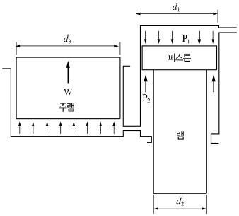
- 226
- 284
- 334
- 438
(정답률: 17%)
44. 2m/s의 속도로 물이 흐를 때 피토관 수두 높이 h는?
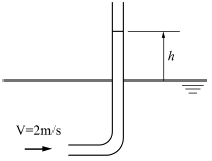
- 0.⑤3m
- 0.102m
- 0.204m
- 0.412m
(정답률: 35%)
45. 동점성계수가 0.1×10-5m2/s인 유체가 안지름 10cm인 원관 내에 1m/s로 흐르고 있다. 관마찰계수가 0.022이며 관의 길이가 200m일 때의 손실수두는 약 몇 m인가? (단, 유체의 비중량은 9800N/m3이다.)
- 22.2
- 11.0
- 6.58
- 2.24
(정답률: 30%)
46. 평판 위의 경계층 내에서의 속도분포(u)가
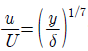
일 때 경계층 배제두께(boundary layer displacement thickness)는 얼마인가? (단, y는 평판에서 수직한 방향으로의 거리이며, U는 자유유동의 속도, δ는 경계층의 두께이다.)- δ/8
- δ/7
- 6/7δ
- 7/8δ
(정답률: 18%)
47. 밀도가 ρ인 액체와 접촉하고 있는 기체 사이의 표면장력이 σ라고 할 때 그림과 같은 지름 d의 원통 모세관에서 액주의 높이 h를 구하는 식은? (단, g는 중력가속도이다.)
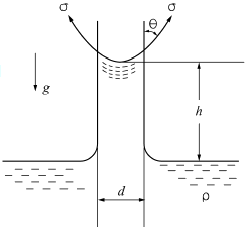
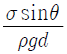
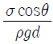
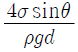
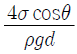
(정답률: 35%)
48. 다음 변수 중에서 무차원 수는 어느 것인가?
- 가속도
- 동점성계수
- 비중
- 비중량
(정답률: 36%)
49. 그림과 같이 반지름 R인 원추와 평판으로 구성된 점도측정기(cone and plate viscometer)를 사용하여 액체시료의 점성계수를 측정하는 장치가 있다. 위쪽의 원추는 아래쪽 원판과의 각도를 0.5˚ 미만으로 유지하고 일정한 각속도 로 회전하고 있으며 갭 사이를 채운 유체의 점도는 위 평판을 정상적으로 돌리는데 필요한 토크를 측정하여 계산한다. 여기서 갭 사이의 속도 분포가 반지름 방향 길이에 선형적일 때, 원추의 밑면에 작용하는 전단응력의 크기에 관한 설명으로 옳은 것은?
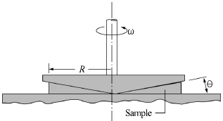
- 전단응력의 크기는 반지름 방향 길이에 관계없이 일정하다.
- 전단응력의 크기는 반지름 방향 길이에 비례하여 증가한다.
- 전단응력의 크기는 반지름 방향 길이의 제곱에 비례하여 증가한다.
- 전단응력의 크기는 반지름 방향 길이의 1/2승에 비례하여 증가한다.
(정답률: 12%)
50. 그림과 같이 폭이 2m, 길이가 3m인 평판이 물속에 수직으로 잠겨있다. 이 평판의 한쪽면에 작용하는 전체 압력에 의한 힘은 약 얼마인가?
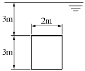
- 88kN
- 176kN
- 265kN
- 353kN
(정답률: 30%)
51. 유량 측정 장치 중 관의 단면에 축소부분이 있어서 유체를 그 단면에서 가속시킴으로써 생기는 압력강하를 이용하여 측정하는 것이 있다. 다음 중 이러한 방식을 사용한 측정장치가 아닌 것은?
- 노즐
- 오리피스
- 로터미트
- 벤투리미터
(정답률: 27%)
52. 나란히 놓인 두 개의 무한한 평판 사이의 층류 유동에서 속도 분포는 포물선 형태를 보인다. 이 때 유동의 평균 속도(Vau)와 중심에서의 최대 속도(Vmax)의 관계는?
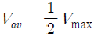
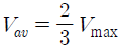
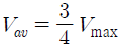
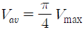
(정답률: 25%)
53. 안지름 10cm인 파이프에 물이 평균속도 1.5cm/s로 흐를 때(경우ⓐ)와 비중이 0.6이고 점성계수가 물의 1/5인 유체 A가 물과 같은 평균속도로 동일한 관에 흐를 때(경우ⓑ), 파이프 중심에서 최고속도는 어느 경우가 더 빠른가? (단, 물의 점성계수는 0.001kg/(m*s)이다.)
- 경우ⓐ
- 경우ⓑ
- 두 경우 모두 최고속도가 같다
- 어느 경우가 더 빠른지 알 수 없다.
(정답률: 13%)
54. 무게가 1000N인 물체를 지름 5m인 낙하산에 매달아 낙하할 때 종속도는 몇 m/s가 되는가? (단, 낙하산의 항력계수는 0.8, 공기의 밀도는 1.2kg/m3이다.)
- 5.3
- 10.3
- 18.3
- 32.2
(정답률: 32%)
55. 점성계수의 차원으로 옳은 것은? (단, F는 힘, L은 길이, T는 시간의 차원이다.)
- FLT-2
- FL2T
- FL-1T-1
- FL-2T
(정답률: 23%)
56. 스프링클러의 중심축을 통해 공급되는 유량은 총 3L/s이고 네 개의 회전이 가능한 관을 통해 유출된다. 출구 부분은 접선 방향과 30˚의 경사를 이루고 있고 회전 반지름은 0.3m이고 각 출구 지름은 1.5cm로 동일하다. 작동 과정에서 스프링클러의 회전에 대한 저항토크가 없을 때 회전 각속도느 약 몇 rad/s인가? (단, 회전축상의 마찰은 무시한다.)
- 1.225
- 42.4
- 4.24
- 12.25
(정답률: 20%)
57. 5℃의 물(밀도 1000kg/m3, 점성계수 1.5×10-3kg/(mㆍs))이 안지름 3mm, 길이 9m인 수평파이프 내부를 평균속도 0.9m/s로 흐르게 하는데 필요한 동력은 약 몇 W인가?
- 0.14
- 0.28
- 0.42
- 0.56
(정답률: 17%)
58. 정상 2차원 속도장 내의 한 점(2,3)에서 유선의 기울기 는?
- -3/2
- -2/3
- 2/3
- 3/2
(정답률: 28%)
59. 압력 용기에 장착된 게이지 압력계의 눈금이 400kPa를 나타내고 있다. 이 때 실험실에 놓여진 수은 기압계에서 수은의 높이는 750mm이었다면 압력 용기의 절대압력은 약 몇 kPa인가? (단, 수은의 비중은 13.6이다.)
- 300
- 500
- 410
- 620
(정답률: 34%)
60. 다음 중 2차원 비압축성 유동이 가능한 유동은 어떤 것인가? (단, u는 x방향 속도 성분이고, v는 y방향 속도 성분이다.)
- u=x2-y2, v=-2xy
- u=2x2-y2, v=4xy
- u=x2+y2, v=3x2-2y2
- u=2x+3xy, v=-4xy+3y
(정답률: 26%)
4과목: 유체기계 및 유압기기
61. 절대 진공에 가까운 저압의 기체를 대기압까지 압축하는 펌프는?
- 왕복 펌프
- 진공 펌프
- 나사 펌프
- 축류 펌프
(정답률: 81%)
62. 수차 중 물의 송출 방향이 축방향이 아닌 것은?
- 펠턴 수차
- 프란시스 수차
- 사류 수차
- 프로펠러 수차
(정답률: 66%)
63. 다음 중 유체기계의 분류에 대한 설명으로 옳지 않은 것은?
- 유체기계는 취급되는 유체에 따라 수력기계, 공기기계로 구분된다.
- 공기기계는 송풍기, 압축기, 수차 등이 있으며 원심형, 횡류형, 사류형 등으로 구분된다.
- 수차는 크게 중력수차, 충동수차, 반동수차로 구분할 수 있다.
- 유체기계는 작동원리에 따라 터보형 기계, 용적형 기계, 그 외 특수형 기계로 분류할 수있다.
(정답률: 65%)
64. 펌프에서 발생하는 축추력의 방지책으로 거리가 먼 것은?
- 평형판을 사용
- 밸런스 홀을 설치
- 단방향 흡입형 회전차를 채용
- 스러스트 베어링을 사용
(정답률: 73%)
65. 토크컨버터의 기본 구성 요소에 포함되지 않는 것은?
- 임펠러
- 러너
- 안내깃
- 흡출관
(정답률: 59%)
66. 압축기의 손실을 기계손실과 유체손실로 구분할 때 다음 중 유체손실에 속하지 않는 것은?
- 흡입구에서 송출구에 이르기까지 유체 전체에 관한 마찰 손실
- 곡관이나 단면변화에 의한 손실
- 베어링, 패킹상자 및 기밀장치 등에 의한 손실
- 회전차 입구 및 출구에서의 충돌손실
(정답률: 68%)
67. 수차의 유효낙차는 총낙차에서 여러 가지 손실수두를 제외한 값을 의미하는데 다음 중 이 손실수두에 속하지 않는 것은?
- 도수로에서의 손실수두
- 수압관 속의 마찰손실수두
- 수차에서의 기계 손실수두
- 방수로에서의 손실수두
(정답률: 51%)
68. 펌프에서 공동현상(cavitation)이 주로 일어나는 곳을 옳게 설명한 것은?
- 회전차 날개의 입구를 조금 지나 날개의 표면(front)에서 일어난다.
- 펌프의 흡입구에서 일어난다.
- 흡입구 바로 앞에 있는 곡관부에서 일어난다.
- 회전차 날개의 입구를 조금 지나 날개의 이면(back)에서 일어난다.
(정답률: 64%)
69. 970 rpm으로 0.6m3/min의 수량을 방출할 수 있는 펌프가 있는데 이를 1450rpm으로 운전할 때 수량은 약 몇 m3/min인가? (단, 이 펌프는 상사법칙이 적용된다.)
- 0.9
- 1.5
- 1.9
- 2.5
(정답률: 59%)
70. 다음 중 반동수차에 속하지 않는 것은?
- 펠턴 수차
- 카플란 수차
- 프란시스 수차
- 프로펠러 수차
(정답률: 67%)
71. 관(튜브)의 끝을 넓히지 않고 관과 슬리브의 먹힘 또는 마찰에 의하여 관을 유지하는 관 이음쇠는?
- 스위블 이음쇠
- 플랜지 관 이음쇠
- 플레어드 관 이음쇠
- 플레어리스 관 이음쇠
(정답률: 57%)
72. 다음 중 일반적으로 가변 용량형 펌프로 사용할 수 없는 것은?
- 내접 기어 펌프
- 축류형 피스톤 펌프
- 반경류형 피스톤 펌프
- 압력 불평형형 베인 펌프
(정답률: 57%)
73. 공기압 장치와 비교하여 유압장치의 일반적인 특징에 대한 설명 중 틀린 것은?
- 인화에 따른 폭발의 위험이 적다.
- 작은 장치로 큰 힘을 얻을 수 있다.
- 입력에 대한 출력의 응답이 빠르다.
- 방청과 윤활이 자동적으로 이루어진다.
(정답률: 73%)
74. 그림의 유압 회로도에서 ①의 밸브 명칭으로 옳은 것은?
- 스톱 밸브
- 릴리프 밸브
- 무부하 밸브
- 카운터 밸런스 밸브
(정답률: 68%)
75. 4포트 3위치 방향밸브에서 일명 센터 바이패스형이라고도 하며, 중립위치에서 A, B포트가 모두 닫히면 실린더는 임의의 위치에서 고정되고, 또 P 포트와 T 포트가 서로 통하게 되므로 펌프를 무부하 시킬 수 있는 형식은?
- 탠덤 센터형
- 오픈 센터형
- 클로즈드 센터형
- 펌프 클로즈드 센터형
(정답률: 68%)
76. 다음 중 드레인 배출기 붙이 필터를 나타내는 공유압 기호는?
(정답률: 56%)
77. 그림과 같은 유압기호의 조작방식에 대한 설명으로 옳지 않은 것은?
- 2방향 조작이다.
- 파일럿 조작이다.
- 솔레노이드 조작이다.
- 복동으로 조작할 수 있다.
(정답률: 60%)
78. 그림과 같이 액추에이터의 공급 쪽 관로 내의 흐름을 제어함으로써 속도를 제어하는 회로는?
- 시퀀스 회로
- 체크 백 회로
- 미터 인 회로
- 미터 아웃 회로
(정답률: 72%)
79. 비중량(specific weight)의 MLT계 차원은? (단, M:질량, L:길이, T:시간)
- ML-1T-1
- ML2T-3
- ML-2T-2
- ML2T-2
(정답률: 60%)
80. 기름의 압축률이 6.8×10-5cm2/kgf일 때 압력을 0에서 100kgf/cm2까지 압축하면 체적은 몇 % 감소하는가?
- 0.48
- 0.68
- 0.89
- 1.46
(정답률: 61%)
5과목: 건설기계일반 및 플랜트배관
81. 다음 중 스크레이퍼의 작업 가능 범위로 거리가 먼 것은?
- 굴착
- 운반
- 적재
- 파쇄
(정답률: 56%)
82. 아스팔트 피니셔의 규격표시 방법은?
- 아스팔트 콘크리트를 포설할 수 있는 표준 포장너비
- 아스팔트를 포설할 수 있는 아스팔트의 무게
- 아스팔트 콘크리트를 포설할 수 있는 도로의 너비
- 아스팔트 콘크리트를 포설할 수 있는 타이어의 접지너비
(정답률: 60%)
83. 버킷계수는 1.15, 토량환산계수는 1.1, 작업효율은 80%이고, 1회 사이클 타임은 30초, 버킷 용량은 1.4 인 로더의 시간당 작업량은 약 몇 m3/hr인가?
- 141
- 170
- 192
- 215
(정답률: 73%)
84. 굴삭기의 작업 장치 중 유압 셔블(shovel)에 대한 설명으로 틀린 것은?
- 장비가 있는 지면보다 낮은 곳을 굴삭하기에 적합하다.
- 산악지역에서 토사, 암반 등을 굴삭하여 트럭에 싣기에 적합한 장치이다.
- 페이스 셔블(face shovel)이라고도 한다.
- 백호 버킷을 뒤집어 사용하기도 한다.
(정답률: 62%)
85. 다음 중 모터 스크레이퍼(자주식 스크레이퍼)의 특징에 대한 설명으로 틀린 것은?
- 피견인식에 비해 이동속도가 빠르다.
- 피견인식에 비해 작업범위가 넓다.
- 볼의 용량이 6~9m3정도이다.
- 험난지 작업이 곤란하다.
(정답률: 49%)
86. 무한궤도식 건설기계의 주행장치에서 하부 구동체의 구성품이 아닌 것은?
- 트랙 롤러
- 캐리어 롤러
- 스프로킷
- 클러치 요크
(정답률: 43%)
87. 로더를 적재방식에 따라 분류한 것으로 틀린 것은?
- 스윙 로더
- 리어 엔드 로더
- 오버 헤드 로더
- 사이드 덤프형 로더
(정답률: 44%)
88. 굴착력이 강력하여 견고한 지반이나 깨어진 암석 등을 준설하는데 가장 적합한 준설선은?
- 버킷 준설선(bucket dredger)
- 펌프 준설선(pump dredger)
- 디퍼 준설선(dipper dredger)
- 그래브 준설선(grab dredger)
(정답률: 59%)
89. 플랜트 배관설비에서 열응력이 주요 요인이 되는 경우의 파이프 래크상의 배관 배치에 관한 설명으로 틀린 것은?
- 루프형 신축 곡관을 많이 사용한다.
- 온도가 높은 배관일수록 내측(안쪽)에 배치한다.
- 관 지름이 큰 것일수록 외측(바깥쪽)에 배치한다.
- 루프형 신축 곡관은 파이프 래크상의 다른 배관보다 높게 배치한다.
(정답률: 64%)
90. 6-4황동이라고도 하는 문즈 메탈의 주요 성분은?
- Cu:40%, Zn:60%
- Cu:40%, Sn:60%
- Cu:60%, Zn:40%
- Cu:60%, Sn:40%
(정답률: 65%)
91. 배관 공사 중 또는 완공 후에 각종 기기와 배관라인 전반의 이상 유무를 확인하기 위한 배관 시험의 종류가 아닌 것은?
- 수압시험
- 기압시험
- 만수시험
- 통전시험
(정답률: 70%)
92. 다음 중 동관용 공구로 가장 거리가 먼 것은?
- 리머
- 사이징 툴
- 플레어링 툴
- 링크형 파이프커터
(정답률: 50%)
93. 펌프에서 발생하는 진동 및 밸브의 급격한 폐쇄에서 발생하는 수격작용을 방지하거나 억제시키는 지지 장치는?
- 서포트
- 행거
- 브레이스
- 레스트레인트
(정답률: 57%)
94. 사용압력 50kgf/cm2, 배관의 호칭지름 50A, 관의 인장강도 20kgf/mm2인 압력 배관용 탄소강관의 스케줄 번호는? (단, 안전율은 4이다.)
- 80
- 100
- 120
- 140
(정답률: 49%)
95. 가단 주철제 나사식 관 이음재의 부속품과 명칭의 연결로 틀린 것은?
(정답률: 69%)
96. 배관 유지관리의 효율화 및 안전을 위해 색채로 배관을 표시하고 있다. 배관 내 흐름유체가 가스일 경우 식별색은?
- 파랑색
- 빨강색
- 백색
- 노랑색
(정답률: 65%)
97. 평면상의 변위뿐만 아니라 입체적인 변위까지도 안전하게 흡수하므로 어떠한 형상에 의한 신축에도 배관이 안전하며 설치 공간이 적은 신축이음은?
- 슬리브형 신축이음
- 벨로즈형 신축이음
- 볼조인트형 신축이음
- 스위블형 신축이음
(정답률: 61%)
98. 배관의 지지장치 중 행거의 종류가 아닌 것은?
- 리지드 행거
- 스프링 행거
- 콘스턴트 행거
- 스토퍼 행거
(정답률: 49%)
99. 일반적으로 배관용 가스절단기의 절단 조건이 아닌 것은?
- 모재의 성분 중 연소를 방해하는 원소가 적어야 한다.
- 모재의 연소온도가 모재의 용융온도보다 높아야 한다.
- 금속 산화물의 용융온도가 모재의 용융온도보다 낮아야 한다.
- 금속산화물의 유동성이 좋으며, 모재로부터 쉽게 이탈될 수 있어야 한다.
(정답률: 53%)
100. 덕타일 주철관은 구상흑연 주철관이라고도 하며 물 수송에 사용하는 관이다. 이 관의 특징으로 틀린 것은?
- 보통 회주철관보다 관의 수명이 길다.
- 강관과 같은 높은 강도와 인성이 있다.
- 변형에 대한 높은 가요성과 가공성이 있다.
- 보통 주철관과 같이 내식성이 풍부하지 않다.
(정답률: 70%)